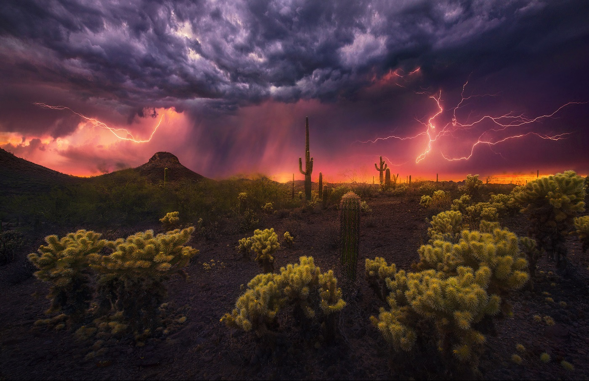

Clientes Destacados
Marc Adamus
Marc Adamus es un fotografo especializado en capturar aquellos lugares en los que apenas ha pisado el hombre. Y dedica su vida a ello.
Viendo sus fotografías uno piensa si no seran dibujos o fotomontajes, por lo irreal de las atmosferas y composiciones. Pero debo deciros que lo que muestran sus fotografias, es real. De hecho ha publicado sus obras en publicaciones como National Geographic, Outdoor Photographer o Popular Photography.